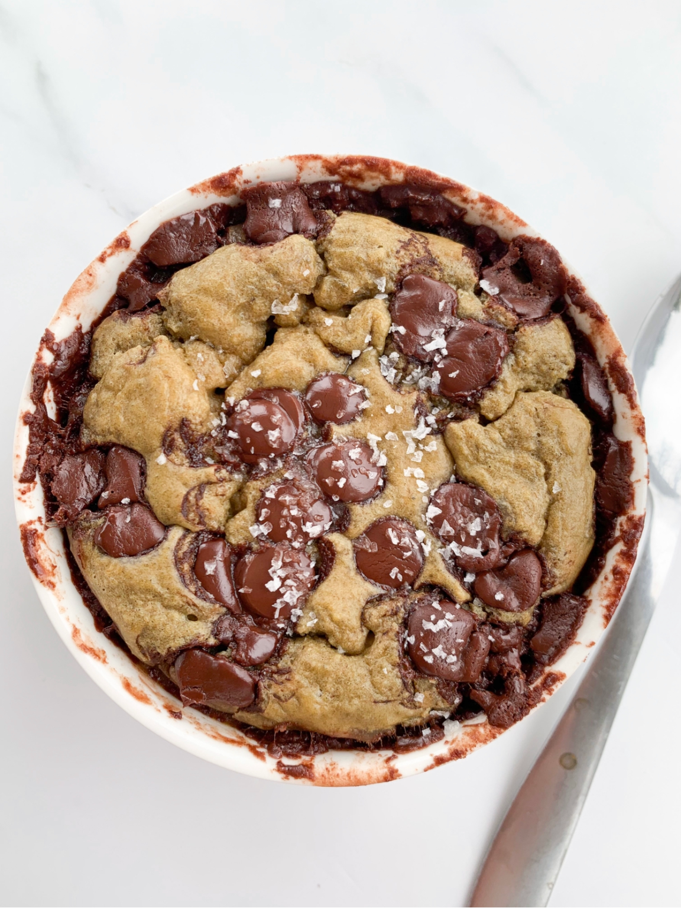

Cookie Baked Oatmeal

This Cookie Baked Oatmeal is inspired by freshly baked chocolate chip
cookies with melty chocolate chips and an ooey-gooey, slightly under-baked
center 🤤
Ingredients
- 1/2 cup oats
- 1/2 banana
- 1 egg
- 1/4 cup milk of choice
- pinch sea salt
- 1/4 tsp baking soda
- chocolate chips
Instructions
-
Preheat oven to 350F. Lighty coat an oven-safe mug, ramekin, or baking
dish with oil.
-
Add all ingredients (except chocolate chips) to a blender and blend
until fully combined.
- Pour batter into baking dish. Top with chocolate chips.
-
Bake for about 20 minutes. Top with flakey sea salt, let cool, and
enjoy!
Full reference here